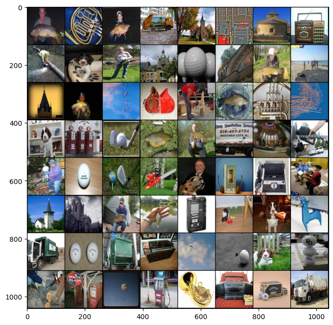
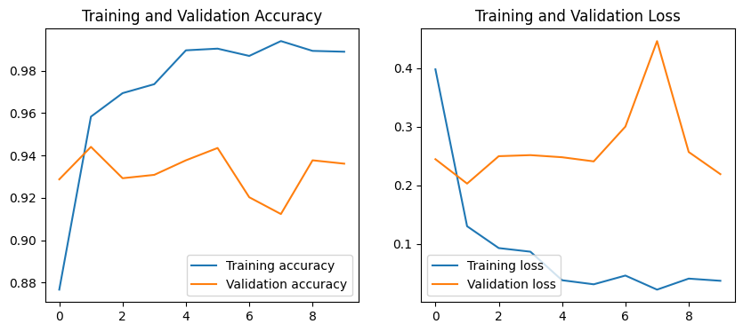

# import libraries
import numpy as np
import matplotlib.pyplot as plt
import os
import pandas as pd
from PIL import Image
import torch
import torch.nn as nn
from torch.utils.data import Dataset, DataLoader, Subset, TensorDataset
import torch.optim as optim
# trochvision is part of PyTorch consisting of models and datasets for computer vision
import torchvision
from torchvision import datasets, transforms
from torchvision.datasets import ImageFolder
from torchvision.models import vgg16Adversarial Training
# Download the dataset
!wget https://www.idahofallshighered.org/vakanski/Codes_Data/imagenette_folders.zip--2026-03-19 17:26:04-- https://www.idahofallshighered.org/vakanski/Codes_Data/imagenette_folders.zip
Resolving www.idahofallshighered.org (www.idahofallshighered.org)... 50.6.2.30
Connecting to www.idahofallshighered.org (www.idahofallshighered.org)|50.6.2.30|:443... connected.
HTTP request sent, awaiting response... 200 OK
Length: 106910653 (102M) [application/zip]
Saving to: ‘imagenette_folders.zip’
imagenette_folders. 100%[===================>] 101.96M 165MB/s in 0.6s
2026-03-19 17:26:05 (165 MB/s) - ‘imagenette_folders.zip’ saved [106910653/106910653]
# Uncompress the dataset
!unzip -uq 'imagenette_folders.zip' -d 'sample_data/'# load the dataset
transform = transforms.Compose([transforms.Resize((128, 128)), transforms.ToTensor()])
train_dataset = ImageFolder(root='sample_data/imagenette_folders/train/', transform=transform)
test_dataset = ImageFolder(root='sample_data/imagenette_folders/val', transform=transform)
train_dataloader = DataLoader(train_dataset, shuffle=True, batch_size=64)
test_dataloader = DataLoader(test_dataset, shuffle=False, batch_size=64)from sklearn.model_selection import train_test_split
# Split the train dataset into train and validation subsets
train_indices, val_indices = train_test_split(range(len(train_dataset)), test_size=0.2, random_state=123)
# Create training and validation subsets
train_dataset_subset = Subset(train_dataset, train_indices)
val_dataset = Subset(train_dataset, val_indices)# Create training, testing, and validation dataloaders for iterating over the datasets
train_dataloader = DataLoader(train_dataset_subset, shuffle=True, batch_size=64)
test_dataloader = DataLoader(test_dataset, shuffle=False, batch_size=64)
val_dataloader = DataLoader(val_dataset, shuffle=False, batch_size=64)print(len(train_dataset))
print(len(test_dataset))
print(len(val_dataset))9469
3925
1894# show several images
def imshow(img):
npimg = img.numpy()
plt.imshow(np.transpose(npimg, (1, 2, 0)))
plt.show()
# get a batch of random training images and labels
images, labels = next(iter(train_dataloader))
# show images
plt.figure(figsize=(8,8))
imshow(torchvision.utils.make_grid(images))
Model Training and Validation
# Import pretrained VGG16
model = vgg16(pretrained=True)/usr/local/lib/python3.12/dist-packages/torchvision/models/_utils.py:208: UserWarning: The parameter 'pretrained' is deprecated since 0.13 and may be removed in the future, please use 'weights' instead.
warnings.warn(
/usr/local/lib/python3.12/dist-packages/torchvision/models/_utils.py:223: UserWarning: Arguments other than a weight enum or `None` for 'weights' are deprecated since 0.13 and may be removed in the future. The current behavior is equivalent to passing `weights=VGG16_Weights.IMAGENET1K_V1`. You can also use `weights=VGG16_Weights.DEFAULT` to get the most up-to-date weights.
warnings.warn(msg)Downloading: "https://download.pytorch.org/models/vgg16-397923af.pth" to /root/.cache/torch/hub/checkpoints/vgg16-397923af.pth100%|██████████| 528M/528M [00:02<00:00, 189MB/s]# Change the output in the last layer to 10 classes
model.classifier._modules['6'] = nn.Linear(4096, 10)# Check if GPU is available
device = torch.device('cuda' if torch.cuda.is_available() else 'cpu')
devicedevice(type='cuda')# Move the model to the GPU
model.to(device)VGG(
(features): Sequential(
(0): Conv2d(3, 64, kernel_size=(3, 3), stride=(1, 1), padding=(1, 1))
(1): ReLU(inplace=True)
(2): Conv2d(64, 64, kernel_size=(3, 3), stride=(1, 1), padding=(1, 1))
(3): ReLU(inplace=True)
(4): MaxPool2d(kernel_size=2, stride=2, padding=0, dilation=1, ceil_mode=False)
(5): Conv2d(64, 128, kernel_size=(3, 3), stride=(1, 1), padding=(1, 1))
(6): ReLU(inplace=True)
(7): Conv2d(128, 128, kernel_size=(3, 3), stride=(1, 1), padding=(1, 1))
(8): ReLU(inplace=True)
(9): MaxPool2d(kernel_size=2, stride=2, padding=0, dilation=1, ceil_mode=False)
(10): Conv2d(128, 256, kernel_size=(3, 3), stride=(1, 1), padding=(1, 1))
(11): ReLU(inplace=True)
(12): Conv2d(256, 256, kernel_size=(3, 3), stride=(1, 1), padding=(1, 1))
(13): ReLU(inplace=True)
(14): Conv2d(256, 256, kernel_size=(3, 3), stride=(1, 1), padding=(1, 1))
(15): ReLU(inplace=True)
(16): MaxPool2d(kernel_size=2, stride=2, padding=0, dilation=1, ceil_mode=False)
(17): Conv2d(256, 512, kernel_size=(3, 3), stride=(1, 1), padding=(1, 1))
(18): ReLU(inplace=True)
(19): Conv2d(512, 512, kernel_size=(3, 3), stride=(1, 1), padding=(1, 1))
(20): ReLU(inplace=True)
(21): Conv2d(512, 512, kernel_size=(3, 3), stride=(1, 1), padding=(1, 1))
(22): ReLU(inplace=True)
(23): MaxPool2d(kernel_size=2, stride=2, padding=0, dilation=1, ceil_mode=False)
(24): Conv2d(512, 512, kernel_size=(3, 3), stride=(1, 1), padding=(1, 1))
(25): ReLU(inplace=True)
(26): Conv2d(512, 512, kernel_size=(3, 3), stride=(1, 1), padding=(1, 1))
(27): ReLU(inplace=True)
(28): Conv2d(512, 512, kernel_size=(3, 3), stride=(1, 1), padding=(1, 1))
(29): ReLU(inplace=True)
(30): MaxPool2d(kernel_size=2, stride=2, padding=0, dilation=1, ceil_mode=False)
)
(avgpool): AdaptiveAvgPool2d(output_size=(7, 7))
(classifier): Sequential(
(0): Linear(in_features=25088, out_features=4096, bias=True)
(1): ReLU(inplace=True)
(2): Dropout(p=0.5, inplace=False)
(3): Linear(in_features=4096, out_features=4096, bias=True)
(4): ReLU(inplace=True)
(5): Dropout(p=0.5, inplace=False)
(6): Linear(in_features=4096, out_features=10, bias=True)
)
)# function to train the model for one epoch on the given set
def train(model, train_loader, criterion, optimizer, epoch):
running_loss, total, sum_correct = 0.0, 0, 0
# indicate this is a training step
model.train()
for i, data in enumerate(train_loader):
images, labels = data
labels = labels.type(torch.LongTensor)
images, labels = images.to(device), labels.to(device)
# forward + loss + backward + update
optimizer.zero_grad()
outputs = model(images)
loss = criterion(outputs, labels)
loss.backward()
optimizer.step()
# calculate loss and accuracy
batch_size = images.size(0)
running_loss += loss.item() * batch_size
predicted = outputs.argmax(dim=1)
sum_correct += (predicted == labels).sum().item()
total += batch_size
# return the accuracy and loss
return sum_correct/total, running_loss/total
# function to evaluate the model on the given set
def validate(model, val_loader, criterion):
running_loss, total, sum_correct = 0.0, 0, 0
# indicate this is an evaluation step
model.eval()
with torch.no_grad():
for i, data in enumerate(val_loader):
images, labels = data
labels = labels.type(torch.LongTensor)
images, labels = images.to(device), labels.to(device)
# Compute the output: forward pass only
outputs = model(images)
loss = criterion(outputs, labels)
# calculate loss and accuracy
batch_size = images.size(0)
running_loss += loss.item() * batch_size
predicted = outputs.argmax(dim=1)
sum_correct += (predicted == labels).sum().item()
total += batch_size
# return the accuracy and loss
return sum_correct/total, running_loss/total# training loss and optimizer
criterion = nn.CrossEntropyLoss()
optimizer = optim.Adam(model.parameters(), lr=0.0001)# total number of training epochs
epoch_num = 10
# initialize variables to save the training and validation loss and accuracy
training_loss_plot = []
training_accuracy_plot = []
val_loss_plot = []
val_accuracy_plot = []
import datetime
now = datetime.datetime.now
t = now()
# loop over the number of epochs
for epoch in range(epoch_num):
# train for one epoch: return accuracy and loss
tr_accuracy, tr_loss = train(model, train_dataloader, criterion, optimizer, epoch)
# evaluate after each epoch: return accuracy and loss
val_accuracy, val_loss = validate(model, val_dataloader, criterion)
# append the accuracies and losses after each epoch
training_accuracy_plot.append(tr_accuracy)
training_loss_plot.append(tr_loss)
val_accuracy_plot.append(val_accuracy)
val_loss_plot.append(val_loss)
# Display after each epoch
print(f'Epoch: {epoch + 1}/{epoch_num}\t Training loss: {tr_loss:.3f}\t',
f'Training accuracy: {100*tr_accuracy:2.3f}\t Validation accuracy: {100*val_accuracy:2.3f}')
print('Training time: %s' % (now() - t))Epoch: 1/10 Training loss: 0.398 Training accuracy: 87.670 Validation accuracy: 92.872
Epoch: 2/10 Training loss: 0.130 Training accuracy: 95.828 Validation accuracy: 94.403
Epoch: 3/10 Training loss: 0.093 Training accuracy: 96.937 Validation accuracy: 92.925
Epoch: 4/10 Training loss: 0.087 Training accuracy: 97.360 Validation accuracy: 93.083
Epoch: 5/10 Training loss: 0.038 Training accuracy: 98.957 Validation accuracy: 93.770
Epoch: 6/10 Training loss: 0.031 Training accuracy: 99.036 Validation accuracy: 94.351
Epoch: 7/10 Training loss: 0.046 Training accuracy: 98.693 Validation accuracy: 92.027
Epoch: 8/10 Training loss: 0.022 Training accuracy: 99.393 Validation accuracy: 91.235
Epoch: 9/10 Training loss: 0.041 Training accuracy: 98.931 Validation accuracy: 93.770
Epoch: 10/10 Training loss: 0.037 Training accuracy: 98.891 Validation accuracy: 93.611
Training time: 0:08:53.890007# plot the accuracy and loss for the training and validation datasets
plt.figure(figsize=(10, 4))
plt.subplot(1,2,1)
plt.plot(training_accuracy_plot)
plt.plot(val_accuracy_plot)
plt.legend(['Training accuracy', 'Validation accuracy'])
plt.title('Training and Validation Accuracy')
plt.subplot(1,2,2)
plt.plot(training_loss_plot)
plt.plot(val_loss_plot)
plt.legend(['Training loss', 'Validation loss'])
plt.title('Training and Validation Loss')
plt.show()
# calculate the accuracy and loss on the test dataset
test_accuracy, test_loss = validate(model, test_dataloader, criterion)
print(f'Test dataset accuracy: {100*test_accuracy:2.3f}')Test dataset accuracy: 92.739Generate Advesarial Examples
# Install the Cleverhans library (provides adversarial attacks)
!pip install -qq git+http://github.com/tensorflow/cleverhans.git#egg=cleverhansPreparing metadata (setup.py) ... done ━━━━━━━━━━━━━━━━━━━━━━━━━━━━━━━━━━━━━━━━ 154.7/154.7 kB 3.9 MB/s eta 0:00:00 Building wheel for cleverhans (setup.py) ... done
import cleverhans
from cleverhans.torch.attacks.projected_gradient_descent import projected_gradient_descent# PGD attack on the test dataset
correct = 0
total = 0
adv_images_list = []
labels_list = []
epsilon = 10/255.
for data in test_dataloader:
images, labels = data
images = images.cuda()
labels = labels.cuda()
adversarial_images = projected_gradient_descent(model_fn=model, x=images, eps=epsilon, eps_iter=2.5*epsilon/20, nb_iter=5, norm=np.inf)
outputs = model(adversarial_images)
_, predicted = torch.max(outputs.data, 1)
total += labels.size(0)
correct += (predicted == labels).sum().item()
adv_images_list.append(adversarial_images.detach().cpu())
labels_list.append(labels.cpu())
accuracy = correct / total
print("Accuracy:", accuracy)Accuracy: 0.06522292993630573# Convert lists to tensors
adv_images_tensor = torch.cat(adv_images_list, dim=0)
adv_labels_tensor = torch.cat(labels_list, dim=0)
# Create a dataset from tensors
pgd_test_dataset = TensorDataset(adv_images_tensor, adv_labels_tensor)
# Create a DataLoader
pgd_test_dataloader = DataLoader(pgd_test_dataset, batch_size=64, shuffle=False)
# Calculate the accuracy of the PGD attack on test dataset
pgd_test_accuracy, pgd_test_loss = validate(model, pgd_test_dataloader, criterion)
print(f'PGD adversarial examples accuracy: {100*pgd_test_accuracy:2.3f}')PGD adversarial examples accuracy: 6.522# Check the number of adversarial test images
len(pgd_test_dataset)3925# Plot the first 6 images
fig, axes = plt.subplots(2, 3, figsize=(6, 6))
axes = axes.flatten()
for i in range(6):
ax = axes[i]
img = adversarial_images[i].detach().cpu()
ax.imshow(np.transpose(img, (1, 2, 0)))
ax.axis('off')
plt.tight_layout()
plt.show()WARNING:matplotlib.image:Clipping input data to the valid range for imshow with RGB data ([0..1] for floats or [0..255] for integers). Got range [-0.039215688..1.0392157].
WARNING:matplotlib.image:Clipping input data to the valid range for imshow with RGB data ([0..1] for floats or [0..255] for integers). Got range [-0.039215688..1.0392157].
WARNING:matplotlib.image:Clipping input data to the valid range for imshow with RGB data ([0..1] for floats or [0..255] for integers). Got range [-0.019607844..0.84313726].
WARNING:matplotlib.image:Clipping input data to the valid range for imshow with RGB data ([0..1] for floats or [0..255] for integers). Got range [-0.0039215684..1.0392157].# Apply PGD attack on the validation dataset (to be used during adversarial training)
correct = 0
total = 0
adv_images_list = []
labels_list = []
epsilon = 10/255.
for data in val_dataloader:
images, labels = data
images = images.cuda()
labels = labels.cuda()
adversarial_images = projected_gradient_descent(model_fn=model, x=images, eps=epsilon, eps_iter=2.5*epsilon/20, nb_iter=5, norm=np.inf)
outputs = model(adversarial_images)
_, predicted = torch.max(outputs.data, 1)
total += labels.size(0)
correct += (predicted == labels).sum().item()
adv_images_list.append(adversarial_images.detach().cpu())
labels_list.append(labels.cpu())
accuracy = correct / total
print("Accuracy:", accuracy)Accuracy: 0.061246040126715945# Convert lists to tensors
adv_images_tensor = torch.cat(adv_images_list, dim=0)
adv_labels_tensor = torch.cat(labels_list, dim=0)
# Create a dataset from tensors
pgd_val_dataset = TensorDataset(adv_images_tensor, adv_labels_tensor)
# Create a DataLoader
pgd_val_dataloader = DataLoader(pgd_val_dataset, batch_size=64, shuffle=False)
# Calculate the accuracy of the PGD attack on validation dataset
pgd_val_accuracy, pgd_val_loss = validate(model, pgd_val_dataloader, criterion)
print(f'PGD adversarial examples accuracy: {100*pgd_val_accuracy:2.3f}')PGD adversarial examples accuracy: 6.125# Check the number of adversarial validation images
len(pgd_val_dataset)1894Adversarial Training
# Use a lower learning rate for adversarial fine-tuning
adv_optimizer = optim.Adam(model.parameters(), lr=1e-5)def adversarial_training(model, train_loader, val_loader, pgd_val_dataloader, optimizer, epochs=20, epsilon=10/255.):
for epoch in range(epochs):
model.train()
total_loss = 0
for images, labels in train_loader:
images, labels = images.to(device), labels.to(device)
# Generate FGSM adversarial examples
adv_images = projected_gradient_descent(model_fn=model, x=images,
eps=epsilon, eps_iter=2.5*epsilon/20, nb_iter=5, norm=np.inf)
# Forward pass on adversarial examples (Madry et al.)
outputs = model(adv_images)
loss = criterion(outputs, labels)
# Backward pass and optimization
optimizer.zero_grad()
loss.backward()
optimizer.step()
total_loss += loss.item()
# Evaluate the performance on clean validation dataset at end of each epoch
clean_val_accuracy, clean_val_loss = validate(model, val_dataloader, criterion)
# Evaluate the performance on adversarial validation dataset at end of each epoch
pgd_val_accuracy, pgd_val_loss = validate(model, pgd_val_dataloader, criterion)
print(f"Epoch [{epoch+1}/{epochs}], Loss: {total_loss / len(train_loader):.4f}, "
f"Clean Val Accuracy: {100*clean_val_accuracy:.3f}%, "
f"Adversarial Val Accuracy: {100*pgd_val_accuracy:.3f}%")# Advsarial training
t = now()
adversarial_training(model, train_dataloader, val_dataloader, pgd_val_dataloader, adv_optimizer, epochs=20, epsilon=10/255.)
print('Time for adversarial training: %s' % (now() - t))Epoch [1/20], Loss: 5.3478, Clean Val Accuracy: 82.154%, Adversarial Val Accuracy: 6.811%
Epoch [2/20], Loss: 2.3319, Clean Val Accuracy: 83.369%, Adversarial Val Accuracy: 8.501%
Epoch [3/20], Loss: 2.2660, Clean Val Accuracy: 85.639%, Adversarial Val Accuracy: 8.659%
Epoch [4/20], Loss: 2.2645, Clean Val Accuracy: 85.744%, Adversarial Val Accuracy: 9.240%
Epoch [5/20], Loss: 2.2503, Clean Val Accuracy: 86.167%, Adversarial Val Accuracy: 10.137%
Epoch [6/20], Loss: 2.2429, Clean Val Accuracy: 86.167%, Adversarial Val Accuracy: 10.507%
Epoch [7/20], Loss: 2.2394, Clean Val Accuracy: 86.325%, Adversarial Val Accuracy: 11.140%
Epoch [8/20], Loss: 2.2363, Clean Val Accuracy: 86.484%, Adversarial Val Accuracy: 11.616%
Epoch [9/20], Loss: 2.2417, Clean Val Accuracy: 86.589%, Adversarial Val Accuracy: 12.777%
Epoch [10/20], Loss: 2.2338, Clean Val Accuracy: 86.484%, Adversarial Val Accuracy: 14.150%
Epoch [11/20], Loss: 2.2211, Clean Val Accuracy: 85.850%, Adversarial Val Accuracy: 16.631%
Epoch [12/20], Loss: 2.2036, Clean Val Accuracy: 85.216%, Adversarial Val Accuracy: 20.591%
Epoch [13/20], Loss: 2.1934, Clean Val Accuracy: 84.319%, Adversarial Val Accuracy: 25.818%
Epoch [14/20], Loss: 2.1395, Clean Val Accuracy: 84.636%, Adversarial Val Accuracy: 36.642%
Epoch [15/20], Loss: 2.0311, Clean Val Accuracy: 83.844%, Adversarial Val Accuracy: 59.187%
Epoch [16/20], Loss: 1.8843, Clean Val Accuracy: 82.418%, Adversarial Val Accuracy: 73.495%
Epoch [17/20], Loss: 1.6715, Clean Val Accuracy: 84.213%, Adversarial Val Accuracy: 78.986%
Epoch [18/20], Loss: 1.4629, Clean Val Accuracy: 84.847%, Adversarial Val Accuracy: 81.996%
Epoch [19/20], Loss: 1.2939, Clean Val Accuracy: 86.695%, Adversarial Val Accuracy: 83.791%
Epoch [20/20], Loss: 1.1661, Clean Val Accuracy: 86.378%, Adversarial Val Accuracy: 84.583%
Time for adversarial training: 1:21:48.529747# Calculate the accuracy on the clean test dataset
clean_test_accuracy, test_loss = validate(model, test_dataloader, criterion)
print(f'Clean test dataset accuracy: {100*clean_test_accuracy:2.3f}')Clean test dataset accuracy: 85.987# Calculate the accuracy on the PGD adversarial exmaples
pgd_test_accuracy, adv_test_loss = validate(model, pgd_test_dataloader, criterion)
print(f'PGD adversarial examples on test dataset accuracy: {100*pgd_test_accuracy:2.3f}')PGD adversarial examples on test dataset accuracy: 83.898